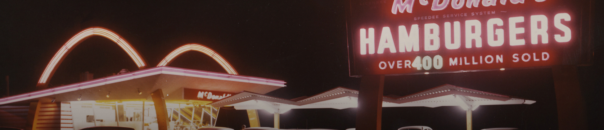

Làm thế nào để tạo ra một đế chế nhà hàng và trở nên thành công trong
một đêm ở tuổi 52? Ray kroc trả lời: “Tôi đúng là người thành công
trong một đêm, nhưng 30 năm là một đêm rất rất dài”.
Vào năm 1917, chàng thanh niên 15 tuổi Ray Kroc đã đăng ký sai tuổi
thật để được trở thành tài xế lái xe cứu thương cho Hội Chữ Thập Đỏ.
Tuy nhiên, ông chưa kịp hoàn tất khóa đào tạo cho công việc thì chiến
tranh đã kết thúc. Ông phát hiện ra một nhà hàng nhỏ nhưng kinh doanh
rất thành công của hai anh em Dick và Mac McMickey, và cảm thấy thích
thú với hệ thống điều hành rất hiệu quả của họ. Họ có một thực đơn rất
giới hạn, tập trung vào chỉ vài món – burger, khoai tây chiên và thức
uống, nhưng điều này đã giúp họ tập trung tốt hơn vào chất lượng ở
từng khâu chế biến.
Ray Kroc đã thuyết phục hai anh em McMickey về tầm nhìn của mình trong
việc xây dựng nhà hàng McMickey’s trên toàn nước Mỹ, và vào năm 1955,
ông đã thành lập Tập đoàn McMickey’s. 5 năm sau đó, ông đăng ký độc
quyền cho thương hiệu McMickey’s. Năm 1958 đánh dấu cột mốc chiếc
hamburger thứ 100 triệu đã được bán ra từ thương hiệu này.
Ông đưa ra câu khẩu hiệu: “Làm kinh doanh cho mình, chứ không một
mình”. Triết lý đơn giản của ông dựa trên nguyên lý kiềng ba chân:
chân thứ nhất là tập đoàn McMickey’s, chân thứ hai là đối tác nhượng
quyền và chân thứ ba là nhà cung ứng tạo đà cho việc phát triển vững
bền cho McMickey’s toàn cầu.
Tìm hiểu thêm về các nhà cung cấp
Ông đưa ra câu khẩu hiệu: “Làm kinh doanh cho mình, chứ không một
mình”. Triết lý đơn giản của ông dựa trên nguyên lý kiềng ba chân:
chân thứ nhất là tập đoàn McMickey’s, chân thứ hai là đối tác nhượng
quyền và chân thứ ba là nhà cung ứng tạo đà cho việc phát triển vững
bền cho McMickey’s toàn cầu.
Năm 1961, tại một nhà hàng mới mở ở làng Elk Grove, Illinois, Ray phát
động một chương trình đào tạo , sau này được gọi là Đại học Hamburger.
Đại học Hamburger đã nghiên cứu và phát triển trong phòng thí nghiệm
các phương pháp nấu nướng, làm lạnh và lưu trữ thực phẩm. Đã có hơn
80,000 sinh viên đã tốt nghiệp từ chương trình này.
Năm 1961, tại một nhà hàng mới mở ở làng Elk Grove, Illinois, Ray phát
động một chương trình đào tạo , sau này được gọi là Đại học Hamburger.
Đại học Hamburger đã nghiên cứu và phát triển trong phòng thí nghiệm
các phương pháp nấu nướng, làm lạnh và lưu trữ thực phẩm. Đã có hơn
80,000 sinh viên đã tốt nghiệp từ chương trình này.
Ray Kroc muốn xây dựng một hệ thống nhà hàng được biết đến bởi sự đồng
nhất trong chất lượng và sự đồng bộ ở khâu chuẩn bị. Ông muốn các món
burger, và thức uống có vị giống hệt nhau cho dù nó được phục vụ tại
nhà hàng ở Alaska hay Alabama.
"Làm kinh doanh cho mình, chứ không một mình." Để đạt được mục tiêu
này, ông chọn một con đường rất độc đáo: thuyết phục các đối tác
nhượng quyền và cả các nhà cung ứng hiểu được tầm nhìn chiến lược của
mình, không chỉ làm việc cho McMickey’s, nhưng mà là cho chính bản
thân mình, cùng với McMickey’s.
"Nếu tôi có một viên gạch cho mỗi lần tôi lặp đi lặp lại cụm từ
“Chất lượng, Dịch vụ, Sạch sẽ và Giá trị”,
thì tôi nghĩ tôi có thể dùng chúng để xây nên một cây cầu băng qua
Đại Tây Dương." Ray Kroc

Tìm hiểu
Cơ hội nghề nghiệp
Chính sách
Liên hệ với chúng tôi
Lịch sử McMickey’s Giới thiệu McMickey’s Xuất xứ
Nhà cung cấp
Dịch vụ
An toàn thực phẩm
Thông tin tuyển dụng
Câu hỏi thường gặp
Điều khoản và Điều kiện
Chính sách về quyền riêng tư
Liên hệ
Phản hồi chất lượng dịch vụ
Câu chuyện của
Ray Kroc
triết lý
độc đáo
đại học
hamburger
cái kết của một huyền thoại
nguồn gốc của
chất lượng
phần thưởng cho sự sáng tạo
nguồn gốc
Câu chuyện về thương hiệu
McMICKEY'S
Trang chủ
Tìm Hiểu
Thực Đơn
Khuyến Mãi
Tin Tức
Liên Hệ
Hệ Thống
Cửa Hàng
Giao Hàng
McMickey'sDelivery